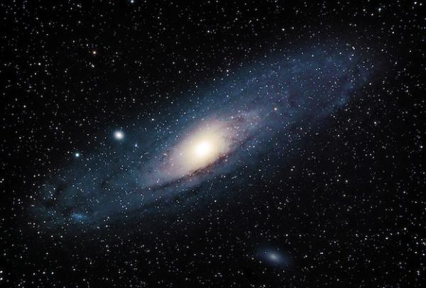

Son galaxias espirales que se caracterizan por tener un núcleo puntual muy brillante. Según su espectro se distinguen:
Galaxia Seyfert Tipo I: poseen líneas anchas de emisión.
Galaxia Seyfert Tipo II: poseen líneas estrechas de emisión.
También se observa que estas galaxias emiten débilmente en radio.
